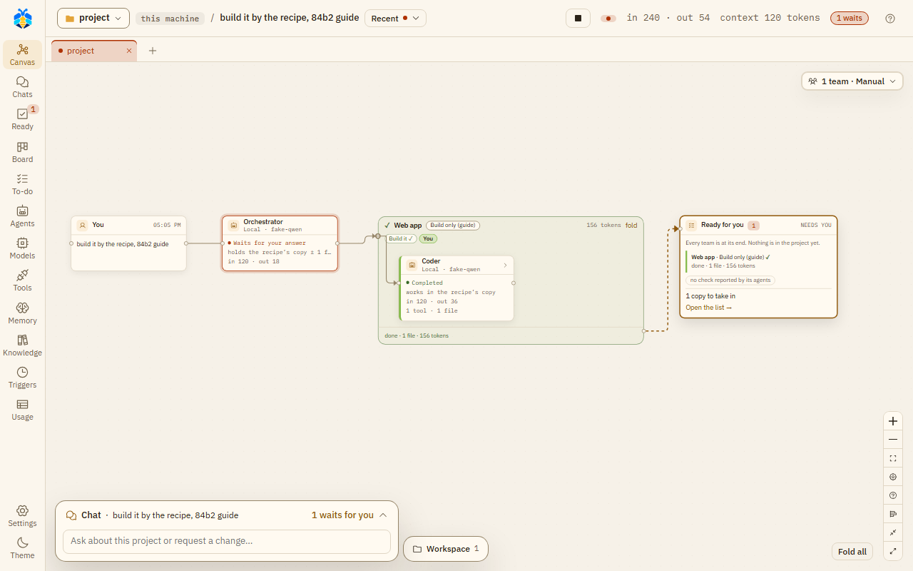

Teams¶
A team is a named group of roles, set out in stages. A role can be in more than one team. Teams are on the Agents page, tab Teams & roles.
The ready teams¶
KOLONİ comes with these teams: Web app, Backend / API, Data, Docs, DevOps, Quality, Research, Product, Maintenance, ML and DataOps. You can change them, or make your own with New team.
To build a website, the Web app team also has a Copywriter for the site's words and an SEO specialist in Build, and an Accessibility reviewer in Check: the SEO specialist makes the site easy to find, the reviewer checks it is easy to use with a keyboard or a screen reader.
Stages¶
A team starts with four stages: Plan, Build, Check and Write & keep up. Drag a role from the role list into a stage. You can rename, move or remove a stage (one must stay), and add one with + Add a stage. Each stage has an "all at once" box for roles that work at the same time.
Each team also has a Default recipe, the recipe it runs by unless a chat picks another, and The Orchestrator may pick it.
Coordinators¶
Each team has its own lead, shown as "Team coordinator". It "steps in only when this team works beside another team; else the Orchestrator runs it." Switched off, the Orchestrator always runs that team itself.
Teams for a chat¶
On the canvas, Teams for this chat chooses how the chat uses teams:
| Mode | What it does |
|---|---|
| Orchestrator decides | "It picks the teams and a recipe for each, and says why." |
| Manual | "You pick the teams it may use; it opens only those a message needs." For each team, pick its default recipe, No recipe, or another recipe. + Add a team with a recipe adds one. |
| No teams | "As before: it calls any role itself." |
Use for new chats in this project keeps the choice for the project's new chats (Settings › This project → New chats start with shows and changes it). Plan first is the switch under the message box, not here. While a team runs, Stop stops it and Finish now ends it with what it has.
A team that was not opened¶
In Manual, a turn that did work may open some of the teams you gave the chat and not others. The Orchestrator is first told once to open the missing team or say why not. If it still does not, a line at the turn's end says so, just above the Orchestrator's answer: "Quality was not opened in this turn." (or "… were not opened in this turn." for several). It is not on the Teams' work is ready card. A turn that opened none of them, because the Orchestrator answered itself, gets no such line.
Waiting for another team¶
An agent of one team, its coordinator for example, can wait for the work of another team of the chat that has a coordinator: a file or an endpoint it needs. Waiting spends none of its steps, and it holds no place among the agents at work: its box says it is waiting.
- When the other team's work in this turn has ended, the waiting agent is told how it ended, its coordinator's report and the files it changed.
- When a message reaches the waiting agent, the wait ends there: it is told a message came, reads it, and may wait again.
- One wait lasts at most 10 minutes. After that the agent is told the other team is still at work, and may wait again, go on without it, or end with what is left undone.
- An agent waits at most three times in a turn.
- Two teams cannot wait for each other: the second is told to do its part first.
- A team not opened in this turn has nothing to wait for.
- Stop on the waiting team ends the wait, and its work.
See Step limits for what a coordinator does when its steps run out.
A team at work: its frame on the canvas fills as its recipe runs.

The Web app team at work: its frame holds the recipe's steps and the Coder, and Ready for you waits at the end.
Only recipes kept in KOLONİ are offered here, not a folder's own recipes.